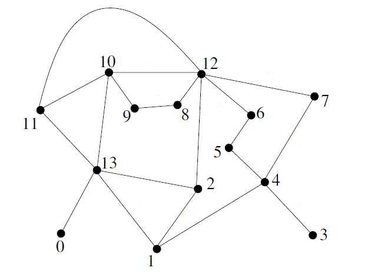

2. Les cycles d’un graphe#
2.1. Motivation : routage dans les réseaux#
Dans ce cours, nous aborderons les notions de cycles, de connexité et d’arbres couvrants dans les graphes. Pour motiver cela, nous commençons par introduire la tâche de broadcast dans les réseaux qui nous amènera au protocole d’arbre couvrant.
Définition: broadcast
Dans une tâche de broadcast, un noeud d’un réseau émet une information qui doit être retransmise à tous les noeuds du réseau.
Note
Cette tâche n’est réalisable que si le graphe est connexe !
Proposition d’algorithme
Chaque noeud qui reçoit l’information la retransmet à tous ses voisins sauf celui duquel il l’a reçu.
Problème
S’il y a un cycle dans le réseau, l’information va tourner indéfiniment le long du cycle. En réalité, la situation est même bien pire car certains noeuds du réseau vont dupliquer l’information (phénomène de «broadcast storm»).
2.2. Définition formelle#
Définitions
Un cycle d’un graphe \(G = (N, E)\) est une liste \(C = (c_0, \dots, c_{k-1})\) de sommets telle que :
\(k > 2\) : on interdit en particulier les allez-retours;
les \(c_i\) sont distincts;
pour tout \(i\) entier, \((c_i, c_{i+1})\) – où \(i\) est considéré modulo \(k\) – est une arrête de \(G\); notamment \((c_{k-1}, c_0)\) est aussi une arête.
Dans le cas d’un graphe orienté, la notion de cycle ne tient pas compte du sens des arêtes. Si l’on suit toujours les arêtes dans leurs sens, on parle alors de circuit.
Exemple
Dans le graphe suivant:


Les chemins suivants sont des cycles : \((1, 2, 13)\) et \((4, 7, 12, 2, 1)\).
Les chemins suivants ne sont pas des cycles :
\((11, 10, 12, 8, 9, 10, 13)\) : passe deux fois par le noeud \(10\);
\((11, 12, 7)\) : \(7 - 11\) n’est pas une arête.
On s’intéresse à une première tâche simple.
Tâche
Étant donné un graphe \(G\) et un chemin \(s\), déterminer si \(s\) est un
cycle de \(G\) (méthode G.is_cycle(s)).
Exercice
Remplacez le ficher
graph.pypar le vôtre après y avoir copié et collé la partie suivant le commentaire# Partie sur les cycles dans un graphe à copier dans votre solution`Implantez et testez la méthode
is_cycle.
Indication
Comme d’habitude, vous pouvez commencer par implanter cette méthode incrémentalement sous forme d’une fonction dans une feuille Jupyter, puis la déplacer dans la classe graphe.
2.3. Problème de la recherche de cycles dans un graphe#
Nous allons maintenant aborder les tâches suivantes.
Tâches
Étant donné un graphe \(G\):
\(G\) a-t-il un cycle ? Dans le cas contraire, le graphe est dit acyclique. Méthode
G.is_acyclic().trouver un cycle de \(G\) : Méthode
G.find_cycle();
Note
Il n’est pas forcément nécessaire de trouver un cycle pour savoir qu’un graphe contient un cycle.
2.3.1. Lemme fondamental des cycles dans un graphe#
Lemme 1
Soit \(G\) un graphe (simple, non orienté). Soient \(u\) et \(v\) deux sommets de \(G\) tel que \(u - v\) n’est pas une arête de \(G\). Soit \(G'\) le graphe ontenu en ajoutant \(u-v\) à \(G\). Alors, de deux choses l’une :
soit \(u\) et \(v\) sont dans la même composante connexe de \(G\), et il y a un cycle dans \(G'\) de la forme \((u, \dots, v)\);
soit \(u\) et \(v\) ne sont pas dans la même composante connexe de \(G\) et alors \(G'\) possège une composante connexe de moins que \(G\).
Exercice
Démontrez le lemme précédent.
2.3.2. Nombre d’arcs dans un graphe et cycles#
Proposition 2
Soit \(G = (N; E)\) un graphe. Alors:
Si \(G\) est connexe, alors \(|E| \geq |N| - 1\).
Si \(G\) est sans cycle, alors \(|E|\leq |N| - 1\).
Démonstration
On va partir du graphe \((N, \emptyset)\) et l’on va rajouter une à une les arêtes de \(G\). On remarque qu’au départ le nombre de composantes connexes est \(|N|\) et qu’il y aura \(|E|\) étapes où l’on rajoute une arête.
Comme à chaque étape le nombre de composantes connexes diminue au plus de \(1\), il faut au moins \(|N| - 1\) étapes pour que le graphe devienne connexe (de \(N\) composantes connexes au début à une composante connexe à la fin).
Si un cycle a été créé lors d’une étape, alors toutes les étapes suivantes le conserve. Supposons maintenant que \(G\) soit sans cycles. Alors, à chaque étape, il n’y a pas eu de création de cycle et donc le nombre de composantes connexes a été réduit exactement de \(1\). Il y a donc au plus \(|N|-1\) étapes.
Dans la preuve du point 2, on a en fait prouvé le résultat plus fort suivant:
Proposition 3
Un graphe \(G=(N; E)\) est acyclique si et seulement si $\(|N| = k + |E|\,,\)\( où \)k$ est le nombre de composantes connexes.
Algorithme de test d’acyclicité
Compter les composantes connexes à l’aide d’un parcours de graphe et utiliser la proposition 3.
Exercice
Implantez les méthodes suivantes dans la classe Graph :
connected_componentsis_connectedis_acyclic
Pour chacune de ces méthodes, précisez dans la documentation la complexité dans le cas le pire.
Algorithme find_cycle(G)
Effectuer un parcours en profondeur du graphe en partant d’un noeud et en notant pour chaque noeud traversé depuis quel sommet on l’a atteint. Si l’on atteint deux fois le même noeud, on a trouvé un cycle.
Exercice
Implantez la méthode find_cycle(G) et donnez sa complexité.
2.4. Notion d’arbre#
Définition
Un arbre est un graphe connexe et acyclique.
Dans un arbre, on a pas de problème pour le routage :
Proposition 4
\(G\) est un arbre si et seulement si, pour tout couple de sommets \(s\) et \(t\), il existe un unique chemin simple (qui ne repasse jamais deux fois par le même sommet) de \(s\) à \(t\).
Proposition 5 (caractérisations d’un arbre)
Pour un graphe \(T\) à \(n\) sommets, il y a équivalence entre les propriétés suivantes :
\(T\) est un arbre;
\(T\) est un graphe connexe à \(n-1\) arêtes;
\(T\) est acyclique à \(n-1\) arêtes;
\(T\) est connexe et la suppression de toute arête le déconnecte;
\(T\) est acyclique et l’ajout de toute arête le rend cyclique.
Démonstration
\(1.\Rightarrow 2.\) et \(1.\Rightarrow 3.\) sont des conséquences immédiates de la proposition 2
\(2.\Rightarrow 1.\) et \(3.\Rightarrow 1.\) sont des conséquences de la proposition 3.
Exercice
Justifiez ci-dessous les équivalences des points 4. et 5.
Exercice
Implantez la méthode G.is_tree() et donnez sa complexité.